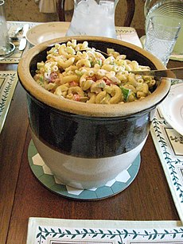

A bowl of Macaroni Salad from Dayton, Virgina
Description
Macaroni salad is a type of pasta salad, served cold, made with cooked elbow macaroni and usually prepared with mayonnaise. Much like potato salad or coleslaw in its use, it is often served as a side dish to barbecue, fried chicken, or other picnic style dishes. Like any dish, national and regional variations abound but generally it is prepared with raw diced onions, dill or sweet pickles and celery and seasoned with salt and pepper.
Ingredients
- 4 cups uncooked elbow macaroni
- 1 cup mayonnaise
- 2/3 cup white sugar
- 1/4 cup distilled white vinegar
- 2 and 1/2 tablespoons prepared yellow mustard
- 1 and 1/2 teaspoons salt
- 1/2 teaspoon ground black pepper
- 2 stalks celery, chopped
- 1 large onion, chopped
- 1 green bell pepper, seeded and chopped
- 1/4 cup grated carrot (Optional)
- 2 tablespoons chopped pimento peppers (Optional)
Steps
- Gather all ingredients
- Bring a large pot of lightly salted water to a boil. Cook elbow macaroni in the boiling water, stirring occasionally, until tender yet firm to the bite, about 8 minutes. Rinse under cold water and drain.
- Mix mayonnaise, sugar, vinegar, mustard, salt, pepper, and macaroni together in a large bowl.
- Stir in celery, onion, green pepper, carrot, and pimentos.
- Refrigerate salad for at least 4 hours before serving, but preferably overnight.
- Enjoy!!